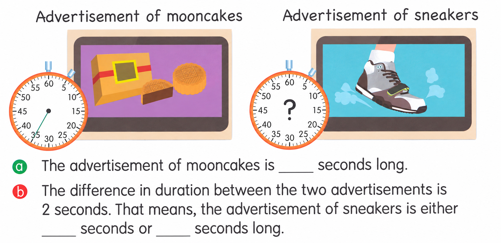
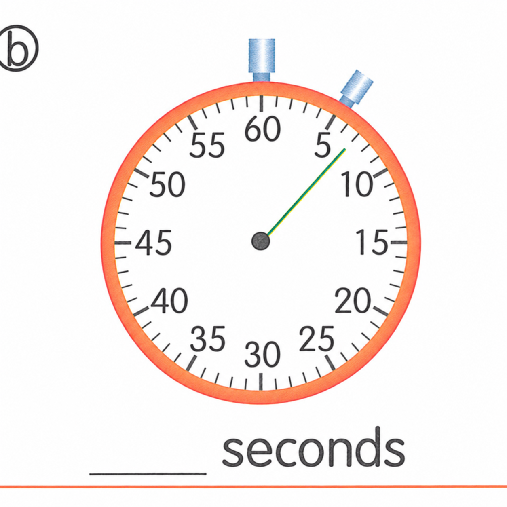

![The map below shows the routes from Alex’s home to the campsite. (a) The route between the campsite and the ____ is the shortest. This route is ____ km long. (b) The shortest route from Alex’s home to the campsite is ____ km long. The shop(s) that he goes past in this route include(s): ____. (c) The instructor needs to go from the campsite to the supermarket and the accessory store to buy something, and then go back to the campsite. He has to travel at least ____ km, and his route is: Campsite → ____ → Campsite.](assets/question_sets/math_grade3_mistakes_2026-09-22_clean/image5.png)
已掌握
| # | 中文意思 | 例句/提示 | 英文默写 | 已掌握 |
|---|---|---|---|---|
| noun 名词 | ||||
| 1 | 游戏房 | The children are in the . | ||
| 2 | 主人 | The dog loves its . | ||
| 3 | 餐馆 | We eat dinner in a . | ||
| 4 | 小船 | The is on the water. | ||
| 5 | 双胞胎 | My brother and I have the same birthday. | ||
| 6 | 周日 | We visit Grandma on . | ||
| 7 | 周六 | I play football on . | ||
| 8 | 森林 | Many animals live in the . | ||
| 9 | 叶子 | A falls from the tree. | ||
| 10 | 家庭 | My is happy. | ||
| verb 动词 | ||||
| 11 | 讨厌 | I noisy places. | ||
| 12 | 称重 | We the bag. | ||
| preposition 介词 | ||||
| 13 | 在……之下 | The cat is the table. | ||
| phrase 短语 | ||||
| 14 | 邮局 | I sent the parcel from the . | ||
| adjective 形容词 | ||||
| 15 | 有帮助的 | This map is . | ||
| adverb 副词 | ||||
| 16 | 很少 | I eat sweets. | ||
| uncategorized 未分类 | ||||
| 17 | 见面 | Let's at the school gate. | ||
| 18 | 楼层 | Our classroom is on the second . | ||
| 19 | 保持 | Please the classroom clean. | ||
| 20 | 超市 | We buy food at the . | ||
| # | 单词/词组 | 中文意思 | 例句/说明 | 已掌握 |
|---|---|---|---|---|
| adjective 形容词 | ||||
| 1 | fantastic | The show was fantastic. | ||
| 2 | rich | Now Billy was rich. | ||
| noun 名词 | ||||
| 3 | pronoun | "He" is a pronoun. | ||
| 4 | Australia | Australia is a big country. | ||
| 5 | seed | The bird pecks a seed. | ||
| 6 | mistake | I made a mistake. | ||
| 7 | interviewer | The interviewer asks questions. | ||
| 8 | adventure | The story is a fun adventure. | ||
| 9 | pond | There is a small pond in the park. | ||
| 10 | kilogram | The bag weighs one kilogram. | ||
| 11 | roundabout | The roundabout is in the playground. | ||
| 12 | PE | He's good at PE. | ||
| noun phrase 名词短语 | ||||
| 13 | convenience store | I buy water at the convenience store. | ||
| 14 | Open Day | Open Day is on 1st March. | ||
| 15 | Parents' Day | Parents' Day is on 15th October. | ||
| 16 | theme park | She went to a theme park. | ||
| 17 | a handbag | They gave me a handbag. | ||
| 18 | Computer Studies | Gopal is good at Computer Studies. | ||
| phrase 短语 | ||||
| 19 | rhyming words | "Cat" and "hat" are rhyming words. | ||
| 20 | Causeway Bay | We went shopping in Causeway Bay. | ||
| verb phrase 动词短语 | ||||
| 21 | play football | I play football every Saturday morning. | ||
| 22 | playing board games | We like playing board games. | ||
| 23 | reading magazines | She likes reading magazines. | ||
| 24 | watching cartoons | She likes watching cartoons. | ||
| 25 | have a buffet meal | We have a buffet meal at the hotel. | ||
| 26 | visit relatives | We visit relatives at Chinese New Year. | ||
| 27 | watch a clown show or a magic show | We can watch a clown show or a magic show at the party. | ||
| uncategorized 未分类 | ||||
| 28 | instruction | Read each instruction before you start the test. | ||
| 29 | paragraph | Read the first paragraph of the story. | ||
| interjection 感叹词 | ||||
| 30 | bingo | Bingo! You got the right answer. | ||
| # | 中文意思 | 例句/提示 | 英文默写 | 已掌握 |
|---|---|---|---|---|
| time/date 时间日期 | ||||
| 1 | 四月 | is the fourth month. | ||
| 2 | 十一月 | is the eleventh month. | ||
| time unit 时间单位 | ||||
| 3 | 时 | An has 60 minutes. | ||
| numbers 数字 | ||||
| 4 | 1 | is 1. | ||
| 5 | 8 | is 8. | ||
| 6 | 10 | is 10. | ||
| 7 | 17 | is 17. | ||
| 8 | 40 | is 40. | ||
| 9 | 50 | is 50. | ||
| 10 | 70 | is 70. | ||
| solid shape 立体图形 | ||||
| 11 | 四棱柱 | A has quadrilateral faces. | ||
| 12 | 五棱锥 | A has one pentagonal base and five triangular side faces. | ||
| 13 | 球 | A is round. | ||
| plane shape 平面图形 | ||||
| 14 | 正方形 | A has four equal sides. | ||
| geometry 几何 | ||||
| 15 | 钝角 | An is greater than 90 degrees and less than 180 degrees. | ||
| # | 单词/词组 | 中文意思 | 例句/说明 | 已掌握 |
|---|---|---|---|---|
| numbers 数字 | ||||
| 1 | approximate value | The approximate value of 198 to the nearest ten is 200. | ||
| operations 运算 | ||||
| 2 | total | Find the total number of apples. | ||
| geometry 几何 | ||||
| 3 | parallel | Parallel lines never meet. | ||
| 4 | curve | Draw a curve. | ||
| 5 | opposite side | In a rectangle, the opposite sides are equal. | ||
| 6 | adjacent side | These are adjacent sides. | ||
| 7 | parallel to each other | The two lines are parallel to each other. | ||
| comparison 比较 | ||||
| 8 | less | 8 is less than 10. | ||
| 9 | fewest | Which group has the fewest? | ||
| 10 | shortest | Find the shortest line. | ||
| 11 | lightest | The 1 kg bag is the lightest of the 1 kg, 2 kg and 3 kg bags. | ||
| time/date 时间日期 | ||||
| 12 | hour hand | At three o'clock, the hour hand points to 3. | ||
| 13 | common year | A common year has 365 days. | ||
| operations calculation 运算 | ||||
| 14 | multiplication | Multiplication can use times. | ||
| 15 | quotient | The quotient is the answer in division. | ||
| 16 | horizontal form | Write it in horizontal form. | ||
| currency money 货币 | ||||
| 17 | exchange | We exchange money at the counter. | ||
| 18 | note | This is a five-dollar note. | ||
| 19 | expensive | This toy costs $50. It is more expensive than the $20 toy. | ||
| measurement 测量 | ||||
| 20 | centimetre | A centimetre is a small unit of length. | ||
| 21 | millimeter | One millimeter is one tenth of a centimeter. | ||
| 22 | balance | We use a balance to compare the weights of two objects. | ||
| 23 | gram | One gram is one thousandth of a kilogram. | ||
| 24 | width | The rectangle has a length of 8 cm and a width of 5 cm. | ||
| data charts 统计图 | ||||
| 25 | pictogram | Read the pictogram. | ||
| 26 | block chart | Read the block chart. | ||
| 句型结构 | ||||
| 27 | Angle ... is the largest. | Angle A is the largest. | ||
| 28 | ... is to the west of ... | The bank is to the west of the school. | ||
| 29 | ... is to the north of ... | The playground is to the north of the hall. | ||
| plane shape 平面图形 | ||||
| 30 | lower base | The lower base of this trapezium is 7 cm long. | ||



